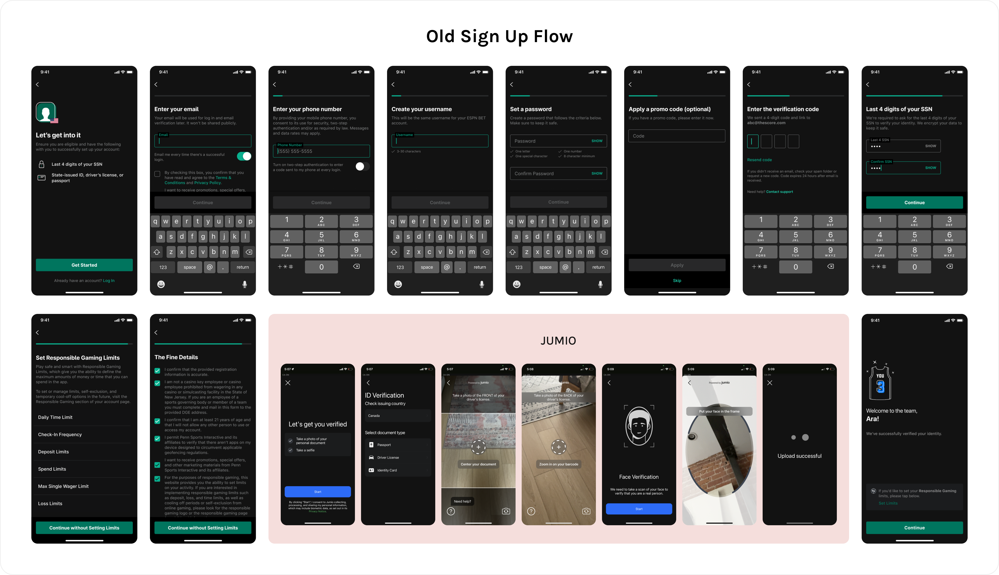

The 18-step sign-up flow was long and repetitive, a single-form-per-page pattern that made registration feel endless. Drop-off was high, and it was costing us on acquisition.

We had the opportunity to revisit the entire experience: reduce friction where we could, defer what didn't need to happen upfront, and find smarter ways to handle compliance without making users feel punished for it. We redesigned and launched the updated flow across ESPN Bet, theScore Bet, and Hollywood Casino.